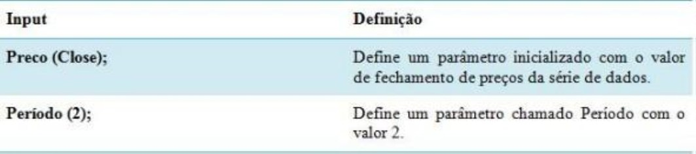

Fluxo de Execução de uma Estratégia
●Definem a interface com o mundo externo, ou seja, é onde usuário poderá alterar e o que servirá
como parâmetro de chamada caso a estratégia seja utilizada em outra interface/estratégia. x x
●Define os itens que serão analisados no processo de otimização.
Paradefinirumparâmetro: NOME_DO_PARÂMETRO (VALOR_DE_INICIALIZAÇÃO)
Exemplo:
Área de declaração de variáveis e funções
Na área de declaração de variáveis informamos todas as variáveis que serão utilizadas na estratégia.
Nesta região também descrevemos funções que desejamos usar no código. As funções devem ser
sempre codificadas após a declaração das variáveis.
Paradeclararumavariável:NOME_DA_VARIAVEL:TIPO
Exemplo:
Área de código
Nesta parte descreve-se o código propriamente dito, ou seja, as regras que utilizam parâmetros,
variáveis e outros dados para calcular sinais e indicadores.
O código de uma estratégia é executado de maneira sequencial. Porém, ele é executado
sequencialmente candle por candle, como se houvesse um laço que percorre toda série de dados de um
ativo.